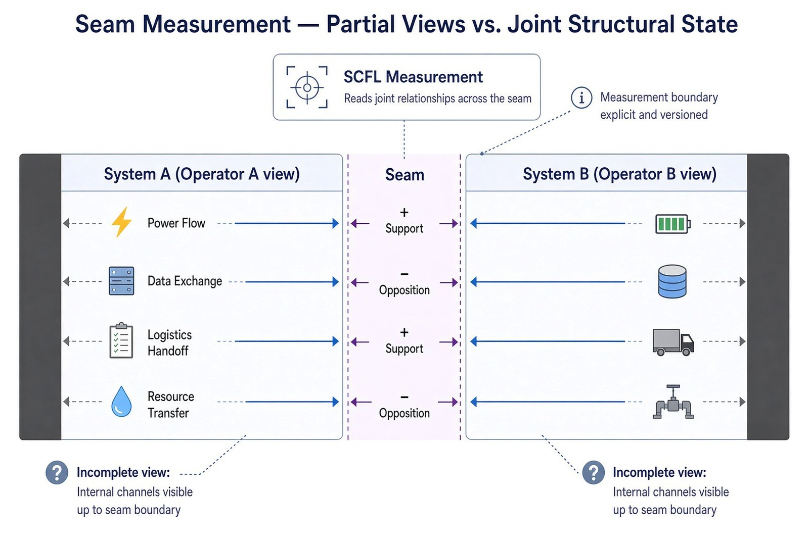

Problem Space 4 of 7 · Across boundaries
What is happening in the seam no single operator sees?
Where two operators, companies or teams meet, each sees only its own side. The instrument reads the joint relationships across the seam, inside an explicit and versioned measurement boundary, so the condition of the seam itself becomes a reading rather than an assumption.
You'll recognize this if two teams, operators or companies each report green, and problems keep appearing where their work meets.

What you receive
A reading of the seam itself: which cross-boundary relationships support and which oppose.
Who uses it
Joint ventures, interconnected utilities, supply-chain partners, shared-service arrangements.
What it starts from
Dated records from each side, within a boundary both parties agree and version.
One Question Challenge
Can the answer to one question begin a transformation for your organization?
Bring us your version of this question. Submit one well-formed question about the relationships holding your system together. If the structural signal is present, you will know it; if not, the engagement stops. No data leaves your environment. No implementation required. No commitment beyond the question itself.
Take the ChallengeThe usual starting point is the One Question Challenge, or a bounded Structural Integrity Scan from existing records.
Figures are illustrative. SCFL-Quad is patent pending. Upstream Coherence Measurement Stratum (UCMS).